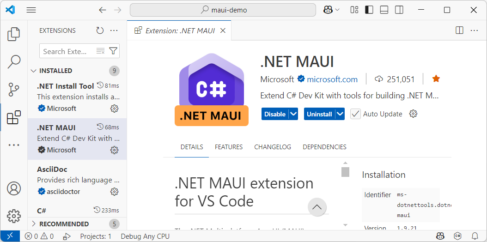
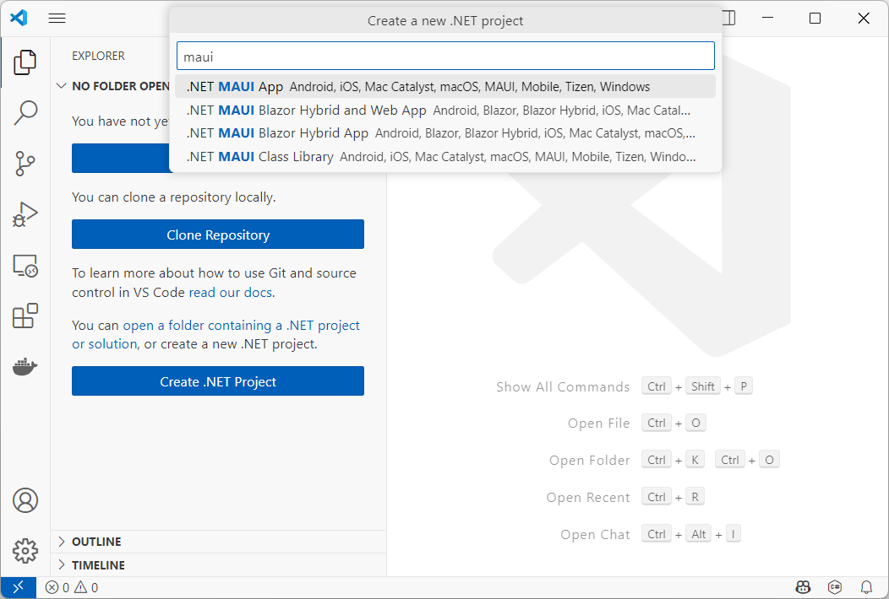
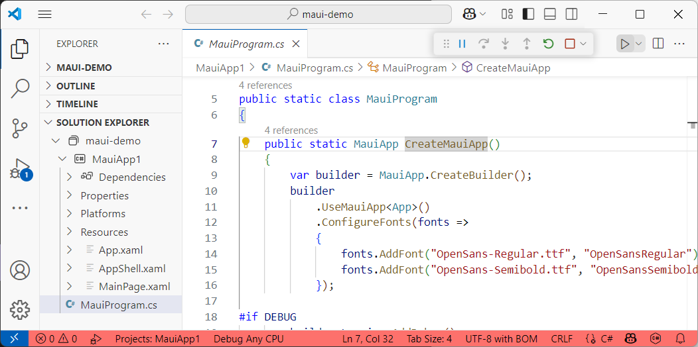
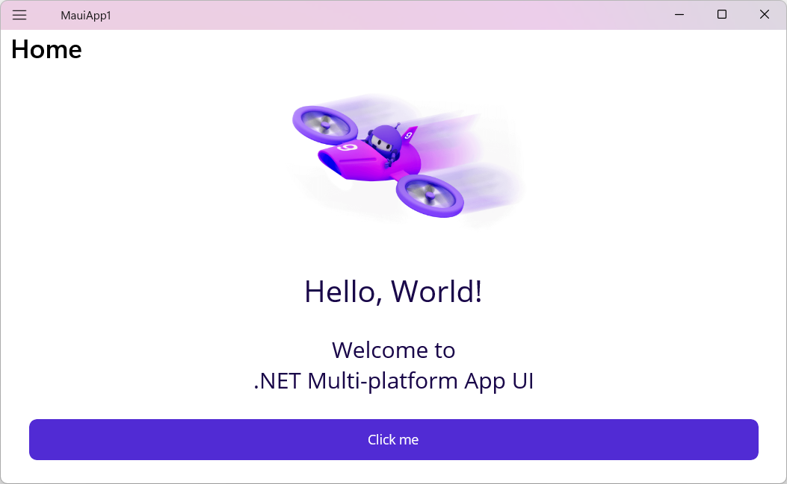
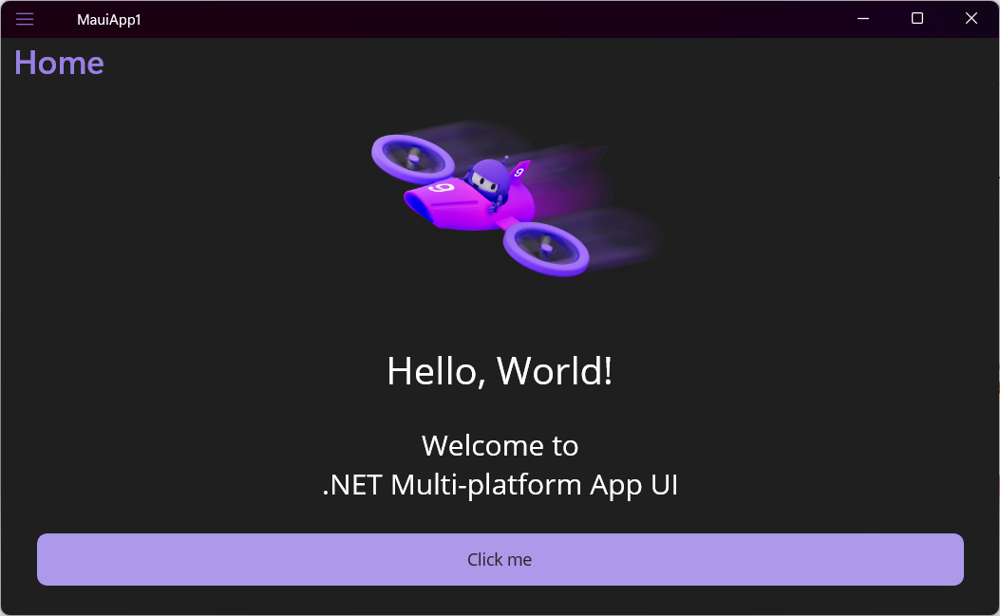
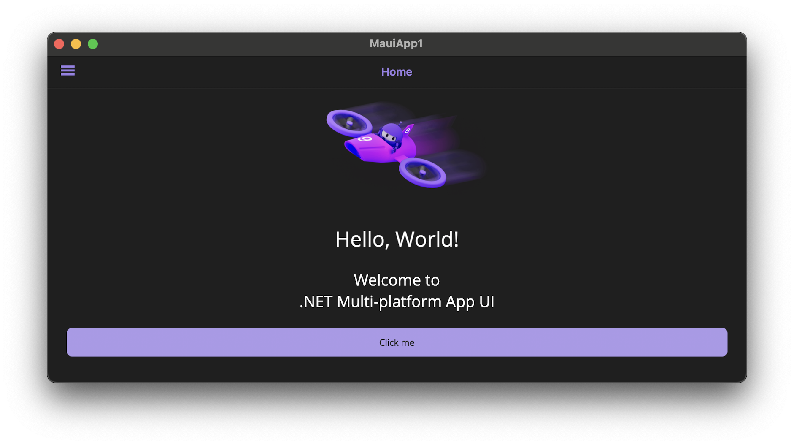
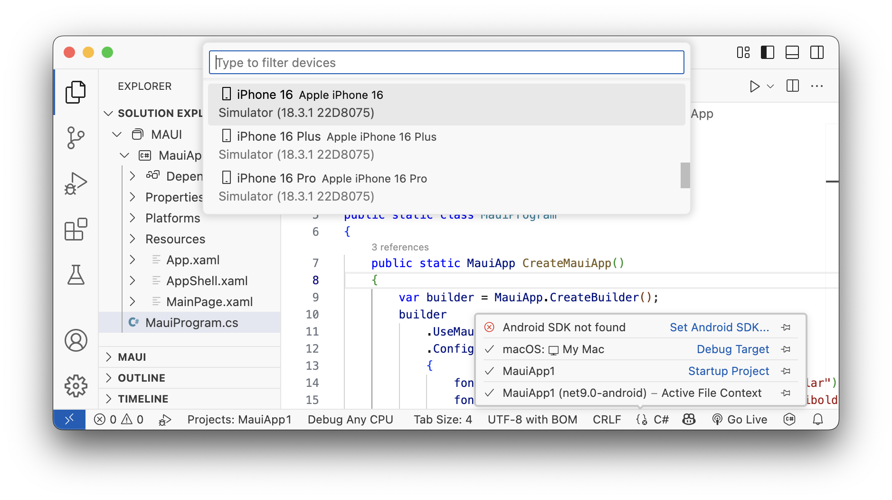
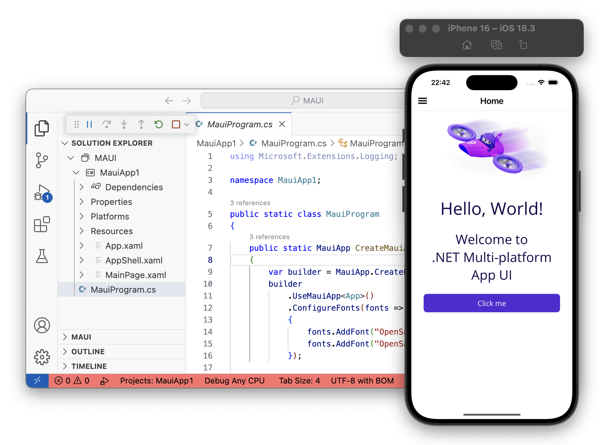

Dotnet MAUI
Multi-Platform App UI
MAUI development met VS Code + MAUI Extension verloopt analoog op Windows, macOS en Linux. Je kan uit eenzelfde codebase op elk OS voor elke mogelijk target builden, maar er zijn beperkingen op het debug target platform.
-
Op Windows kan je debuggen voor Windows en Android.
-
Op macOS kan je debuggen voor iOS, macOS (Mac Catalyst) en Android.
-
Op Linux kan je debuggen voor Android.
Indien je alle target platforms wil debuggen van op eenzelfde fysieke computer, is een mac met daarop een Windows VM de enige optie. Voor school is dat uiteraard niet nodig.
Installeren
Installeer .Net 9 SDK alsook de dotnet maui workload.
dotnet workload install maui
Installeer VS Code en de MAUI Extension.

Op een Windows computer kan je nu builden en een Windows desktop app als debug target gebruiken.
macOS en iOS
Om iOS/macOS debug targets te gebruiken, installeer je XCode en de XCode CLI Tools op een mac.
xcode-select --install
Je moet XCode minstens één keer opstarten en inloggen met een geldige Apple ID vooraleer de MAUI build er gebruik kan van maken.
Android
Indien je interesse hebt in Android debug targets, kan je daarover meer lezen in de officiële documentatie.
Project Maken
Wanneer alles correct geïnstalleerd is, kan je een MAUI project aanmaken.

Open MauiProgram.cs via de solution explorer en run de applicatie.

De applicatie start op.

Deze houdt realtime rekening met actuele dark/light modus.

Debug Targets
We kunnen exact dezelfde codebase gebruiken om de app te builden en te debuggen op een macOS/iOS target.

Indien de XCode iOS simulator aanwezig is, kunnen we die ook targeten.

Hoewel we hier geen Android voorbeeld hebben, voelen we de kracht van MAUI absoluut werken: één enkele codebase - in het ons bekende dotnet/C# - die laagdrempelig verschillende besturingssystemen en soorten devices ondersteunt.

Pagina’s
Je kan zelf een ContentPage toevoegen. De layout definieer je in de xaml file (kan ook in C#) en de presentatielogica in de code behind .xaml.cs file.
Je kan deze registeren in het hoofdmenu in AppShell.xaml.
<?xml version="1.0" encoding="UTF-8" ?>
<Shell> <!-- attributes -->
<ShellContent
Title="Home"
ContentTemplate="{DataTemplate local:MainPage}"
Route="MainPage" />
<ShellContent
Title="MijnPage"
ContentTemplate="{DataTemplate local:MijnPage}"
Route="MijnPage" />
</Shell>Als je pagina’s in folders plaatst, moet je de namespaces en de referenties in lijn brengen. Wanneer ik MijnPage.xaml en MijnPage.xaml.cs verhuis naar folder Views betekent dit:
namespace MauiApp1.Views;
<ContentPage xmlns="http://schemas.microsoft.com/dotnet/2021/maui"
xmlns:x="http://schemas.microsoft.com/winfx/2009/xaml"
x:Class="MauiApp1.Views.MijnPage"><?xml version="1.0" encoding="UTF-8" ?>
<Shell> <!-- attributes -->
<ShellContent
Title="MijnPage"
ContentTemplate="{DataTemplate local:Views.MijnPage}"
Route="MijnPage" />
</Shell>MVVM
Toepassen van het Model-View-ViewModel pattern is een best practice for UI development.
- Model
-
Stelt een element uit domeinmodel voor, bijvoorbeeld een DTO of een Entity.
- View
-
Definitie van de presentatie. In het geval van MAUI betreft het de
xamlenxaml.cs. We beperken de code-behind tot een minimum. De interactie tussen View en Model moet in het ViewModel gebeuren. - ViewModel
-
Een model voor een specifieke view. Deze bevat properties en methodes voor databinding tussen View en Viewmodel.
Het bijkomende ViewModel tussen View en Model zorgt ervoor dat de klassen een nog duidelijker afgebakende verantwoordelijkheid hebben. Dit komt de onderhoudbaarheid en ook de testbaarheid van de codebase ten goede.
Zoals altijd zal je het nut en de kracht van architecturale patronen pas echt ondervinden wanneer je applicatie groeit.
Idealiter steunt de interactie tussen de elementen op Commands en Events die asynchroon afgehandeld worden.
Commands
There are several options for executing code on the view model in response to interactions on the view, such as a button click or item selection. If a control supports commands, the control’s Command property can be data-bound to an ICommand property on the view model. When the control’s command is invoked, the code in the view model will be executed. In addition to commands, behaviors can be attached to an object in the view and can listen for either a command to be invoked or the event to be raised. In response, the behavior can then invoke an ICommand on the view model or a method on the view model.
Events
In order for the view model to participate in two-way data binding with the view, its properties must raise the PropertyChanged event. View models satisfy this requirement by implementing the INotifyPropertyChanged interface, and raising the PropertyChanged event when a property is changed.
For collections, the view-friendly ObservableCollection<T> is provided. This collection implements collection changed notification, relieving the developer from having to implement the INotifyCollectionChanged interface on collections.